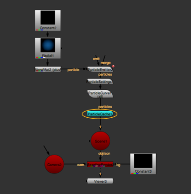

ParticleCache 节点允许您存储要存档的粒子系统的几何模拟。然后可以在不同的会话中读取 Nuke 或者在不同的机器上，而不需要重新计算。
这允许艺术家制作粒子系统，然后由渲染场使用，而无需重新计算，从而加快渲染时间。
注意: ParticleCache 节点不会替换粒子系统。它只是将模拟存储到磁盘上，并且仍然依赖于粒子系统以相同的方式与相同的输入连接。如果粒子系统中有任何变化，ParticleCache 节点会检测到这一点，并显示一个错误，提醒您可能在您不知情的情况下向上游进行的更改。
要缓存粒子模拟:
| 1。 | 一旦你对粒子模拟感到满意，选择 粒子 > ParticleCache 创建 ParticleCache 节点。 |
| 2. | 将 ParticleCache 节点放置在单个粒子系统或多个合并粒子系统的底部。 |

注意: 不能将 ParticleCache 节点放置在一串粒子节点的中间，也不能放置在连接到两个单独粒子流的场景节点的下方。
| 3. |
在 ParticleCache 属性中，单击文件夹图标
|
ParticleCache 使用 。Nkpc 文件扩展名。
注意: ParticleCache 可能需要渲染 100 个子帧。为此，它将小数添加到文件名的帧号中。例如，如果文件中的文件名 文件 字段是 Particle_cache.#.nkpc ,ParticleCache 可能会生成名为 Particle_cache.0001.01.nkpc , Particle_cache.0001.02.nkpc 等等。
| 4. | 如果下游的节点产生运动模糊，粒子系统可能需要请求超出正常帧范围的帧。如果是这种情况，增加 填充 ParticleCache 属性中的值，用于设置添加到 ParticleCache 渲染开始和结束的额外帧的数量。 |
| 5. | 单击 渲染 . |
ParticleCache 将粒子模拟逐帧渲染到文件中。
| 6. | 要使用缓存数据，请启用 从文件中读取 . |
如果出现 “找不到粒子缓存数据” 错误，请返回步骤 4 并增加 填充 价值。
|
|